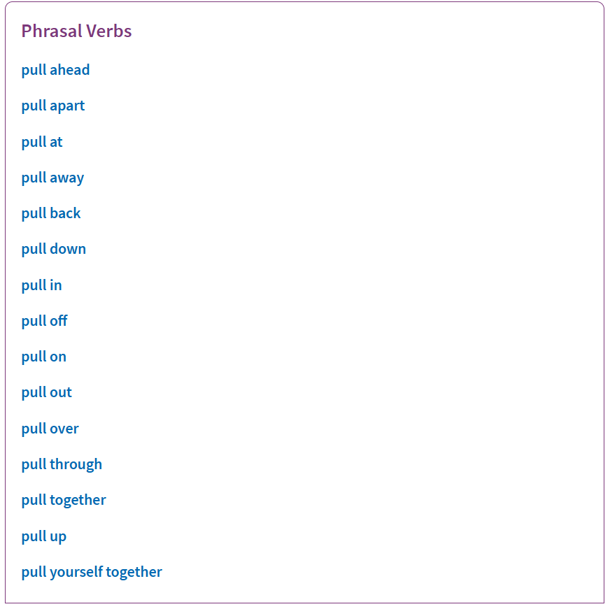

- مقدمة
- لم استخدام القواميس أصلًا؟
- مقارنات
- قواميس تستحق الذكر
مقدمة
هذه المقالة موجهة لمتعلمي اللغة الإنجليزية، وستكون مقارنة لقواميس اللغة الإنجليزية أحادية اللغة (monolingual dictionaries)، وهي القواميس التي تشرح مفردات لغة باستخدام اللغة نفسها. يستخدم هذا المصطلح في سياق تعلم اللغة لغير الناطقين بها، ويقابله مصطلح القواميس الثنائية (bilingual dictionaries) التي تشرح الكلمة بلغة أخرى أو تعطي مقابلًا لها في اللغة الأخرى ببساطة («المترجم» بعبارة أبسط، مثل مترجم غوغل).
لم استخدام القواميس أصلًا؟
عادة استخدام القواميس عمومًا قد لا تكون شائعة حتى عند متعلمي اللغة، لذلك أرى من المناسب أولًا أن أسرد ما أراه من فوائد للقواميس كأداة في ترسانة أدوات تعلم اللغة، خصوصًا القواميس الأحادية مقارنة بأدوات الترجمة (القواميس الثنائية).
أهل مكة أدرى بشعابها
السبب الأوضح -في نظري- هو أن متحدثي اللغة الأصليين (بمعنى لغتهم الأم) -وهم من يصنع القواميس الأحادية غالبًا- عادةً هم أقدر على فهم كلام لغتهم وسياقاته المختلفة وشرحه من المترجمين بطبيعة الحال. 1
بينما تشرح التراجم كل مفردة عادةً بالاكتفاء بذكر مقابلها أو مرداف لها في اللغة الأخرى وافتراض أن القارئ سيشكل الرابط بين الكلمتين باعتبار أنه يعرف معنى الكلمة المقابلة في لغته، تشرح القواميس الأحادية المفردة باستخدام عبارة كاملة مبسطة ولا تكتفي بذكر مرادفات للكلمة.
في الحقيقة، الكتب التي تكتفي بذكر مرادفات الكلمة يقال لها thesaurus (كتاب مفردات) ولا يطلق عليها اسم dictionary (قاموس) في الإنجليزية. للقواميس خاصية أنها تعطي تصورًا أدق للمعاني وتساعد على تمييز الفروق بين المترادفات وأماكن استخدام مفردة مقابل مفردة مرادفة أخرى.
طبعًا يمكن تصور قاموس ثنائي يشرح كل كلمة باستخدام عبارة مفيدة كاملة مكتوبة في اللغة الأخرى بدل الاكتفاء بسرد المترادفات، لكن هذا لا يحصل عادة للأسف.
لكل لغة خصوصياتها
لكل لغة خصوصياتها التي قد يكون من الصعب نقلها بأمانة وبدون الإخلال بالمعنى إلى لغة أخرى.
تشبه هذه النقطة النقطة السابقة من حيث أن مجرد سرد المفردات والكلمات المقابلة في اللغة الأخرى قد لا يكفي، حيث يمكن أن يعطي تصورًا بأننا نستطيع استخدام المفردة الإنجليزية (أو أي لغة يراد تعلمها) في المواضع نفسها التي نستخدم فيها الكلمات المقابلة في لغتنا، وهذا تصور أبعد ما يكون عن الواقع، فلكل لغة طرقها الخاصة في التعبير عن أشياء مشتركة بين بني البشر، وكل طريقة تعبير تتأثر بالثقافة والبيئة اللتين نشأت فيهما اللغة. قد تركز هذه الطرق على جوانب وزوايا معينة ليس لها التركيز نفسه في لغات أخرى، ما يؤثر على سياقات استخدام الكلمات المسموح بها في اللغة.
حصيلة لغوية أوسع
تسمح القواميس الأحادية بتوسيع حصيلتك اللغوية بشكل أسرع وأسلم بحكم أنها تجعلك تنغمس في اللغة من خلال فهم معانيها من خلال معانيها الأخرى، وتعلمك التعبير عن أحاسيس معتادة بطرق جديدة، طرق متحدثي اللغة التي تتعلمها.
سيقودك هذا بدوره إلى أن تدرك ضرورة الاطلاع على ثقافة متحدثي هذه اللغة، حيث إن كثيرًا من التعابير اللغوية لها تاريخ ثقافي عريق ومعرفة هذا التاريخ يساعد على فهمها وجعلك تكتسب القدرة على استخدامها. معرفة السياق التاريخي لبعض التعابير لا غنى عنه، ففي النهاية، أنت تتعلم اللغة للتفاعل بشكل أو بآخر مع متحدثي اللغة أو نتاجهم الفكري، ولكي يحصل فهم مشترك في بعض المواضع يجب أن يكون هناك أرضية مشتركة.
القواميس الأحادية -خصوصًا الموجهة لمتعلمي اللغة- تعتني بالجانب السياقي للتعابير وتوضيح مواضع استخدامها وسياقها الاجتماعي والتاريخي، لأنها موجهة في الأصل إلى أناس من ثقافات أخرى. غالبًا لن تجد هذا الاعتناء في القواميس الثنائية لأنها مكتوبة على الأغلب من قبل أناس قد لا يكون لديهم اطلاع واسع على ثقافة اللغة.
طريق أسرع و”مباشر” أكثر
هناك نقاش كبير في مجتمعات تعلم اللغات على الإنترنت حول فكرة الترجمة إلى لغتك الأم قبل محاولتك التحدث أو إنتاج جملة في اللغة التي تتعلمها، وكيف أن عملية الترجمة حتمًا ستعيقك وتمنعك من التحدث بطلاقة وسلاسة، والعبارة الشهيرة “stop translating in your head” (توقف عن الترجمة في ذهنك).
يعزى هذا عادة إلى أسباب عدة منها التعلم من خلال اللغة الأم غالبًا وعدم استخدام مراجع اللغة الأحادية. استخدام اللغة الأم في بداية رحلة تعلم اللغة لا غنى عنه طبعًا، لكن يجب أن تكون هذه مرحلة مؤقتة تنتقل بعدها إلى بيئة تعلم أكثر تمثيلًا للواقع ليس فيها مكان للغتك الأم التي لن يفهمها من تريد التحدث معه (إذا كنت تتعلم اللغة بغرض التواصل). كما أن عملية الترجمة محدودة كما قلنا سابقًا وليست «دالة تقابلية» بمصطلحات الرياضيات، بمعنى أنه قد لا يكون لكل مفردة أجنبية مقابل مطابق في لغتك الأم وقد لا يكون أيضًا لكل مفردة في لغتك مقابل في اللغة الأجنبية.
التعود على المصادر الأحادية -سواء قواميس أو غيرها- هو خطوة أكثر مباشرة لتسريع كسر الحاجز العائق بينك وبين استيعاب اللغة.
مقارنات
بفرض أنك اقتنعت بكلامي السابق، سأنتقل الآن إلى عمل مقارنة بسيطة بين القواميس الإنجليزية على الإنترنت بالتركيز على جانب فوائدها لمتعلم اللغة. ستكون هذه المقارنات مبنية على تجربتي القصيرة مع هذه القواميس في رحلتي -التي ما زلت مستمرة- مع اللغة الإنجليزية على مدار السنتين الماضيتين.
Oxford Learner’s Dictionaries
قاموس أكسفورد للمتعلمين هو نسخة من قاموس أكسفورد الشهير (والذي سنطلع على نسخة منه هو الآخر لاحقًا) موجه لمتعلمي اللغة.2 يستحق هذا القاموس الذكر أولًا لأنه المفضل لدي ولأنني أعتقد أنه يضم تشكيلة متوازنة من الميزات المفيدة للمتعلمين خصوصًا، منها:
شروح بسيطة
أكبر نقطة لصالح هذا القاموس في نظري هي شروحاته المبسطة المكتوبة غالبًا باستخدام الكلمات الـ3000 الأكثر استخدامًا في اللغة.3 هذا الشيء يجعل استخدامه ممتعًا لمن لديه حصيلة المفردات الكافية ويريد التقدم في تعلمه من خلال الاعتماد على المصادر أحادية اللغة. قارن شروحات هذا القاموس بشروحات Oxford English Dictionary (الذي ليس مخصصًا للمتعلمين) لترى الفرق.
في بدايات مشواري مع القواميس الأحادية أذكر أني بدأت بقاموس أكسفورد للمتعلمين، ثم انتابتني رغبة في المخاطرة وبدأت بمطالعة قاموس أكسفورد العادي، وكنت أجد في كل تعريف تقريبًا كلمات لا أعرفها، أطلع على تعريفاتها هي الأخرى، فأجد في التعريفات كل كلمة أصعب من أختها.
جمل نموذجية لتوضيح استخدام الكلمات
هذه نقطة تأتي بعد الشروح البسيطة بمستوى الأهمية برأيي. قد لا يكون من الممكن دائمًا التعبير بوضوح عن معنى كلمة بمجرد تعريف، اللهم إلا أن يكون التعريف طويلًا ومفصلًا لحد الملل. وحتى لو كان التعريف مثاليًا شاملًا، ما دام ليس هناك مثال عملي عن استخدام المفردة، فقد لا تعرف كيف تستخدمها حتى لو فهمت معنى الكلمة وأصبحت تتعرف عليها عندما تصادفها. هذا لأن التعرف على الشيء والقدرة على “إنتاجه” أو “استدعائه” من الذاكرة عند الحاجة أمران مختلفان.4 والأمثلة العملية تساعد على الإنتاج أكثر، وهي أوضح طريقة لتوصيل كيفية استخدام المفردة بجانب تعريف بسيط لها، فالإنسان بطبعه مجبول على التقليد.
نقطة بارزة أيضا في الجمل التي يوفرها القاموس هي أن الكلمة المعنية في هذه الجمل مكتوبة بخط غامق مع الكلمات وحروف الجر التي تأتي معها عادة لجذب انتباهك إلى استخدام الكلمة المعتاد.
قوائم الكلمات الأكثر تكرارًا
يوفر القاموس عدة قوائم مخصصة للكلمات الأكثر استخدامًا في اللغة، منها:
- قائمة الكلمات الـ3000 الأكثر شيوعًا.
- قائمة أخرى أكبر مكونة من الـ5000 كلمة الأكثر شيوعًا.
- قائمة الأفعال المركبة (phrasal verbs) والعبارات الاصطلاحية (idioms) تحتوي على حوالي 750 مدخلة.
- قائمة للكلمات الأكاديمية والتخصصية الشائعة في المجالات العلمية وما شابه، تحتوي على حوالي 4000 مدخلة.
يظهر القاموس رموز في صفحة كل كلمة موجودة في أحد هذه القوائم لتنبيه القارئ على أهميتها، كما يظهر في الصورة التالية:
قوائم الكلمات الشائعة مفيدة لأنها توضح لك ما يجب أن تعطيه الأولوية في التعلم، وتضاعف سرعة تقدمك في فهم اللغة، فالكلمات ال5000 الأكثر شيوعًا مثلًا تمنحك القدرة على فهم %98 من النصوص العادية في اللغة حسب دراسات.5
تسجيلات صوتية لطرق نطق الكلمات
طرق نطق الكلمات والأصوات لا غنى عنها في أي قاموس يحترم نفسه، وهذا القاموس ليس استثناءً، حيث يوفر تسجيلات نطق لكل من اللهجتين البريطانية والأمريكية الشمالية. بالإضافة إلى تسجيلات منفصلة لنطق الأفعال المصرفة غير الشاذة والشاذة منها، وهذا ما لم ألحظه في أي قاموس آخر، وأظن أنه مفيد لأن بعض الأفعال قد لا تكون طريقة نطقها واضحة حتى عندما تضاف إليها لاحقات مثل ed خصوصًا للمبتدئين مثلي.
ككل القواميس المحترمة أيضًا، هناك طرق النطق بالأبجدية الصوتية الدولية (International Phonetic Alphabet)، وهي أبجدية مخصصة لتمثيل أصوات اللغة بطريقة متناسقة لا لبس فيها (/leɪ/ في الصورة في الأعلى كمثال). تعلم هذه الأبجدية مفيد لأننا جميعًا نعرف أن الإنجليزية لغة فوضوية من ناحية الرابط بين كتابة الكلمة ونطقها، حيث قد تأتي حروف لا تنطق، وحروف أخرى يتغير نطقها من كلمة إلى أخرى، وهذه التغييرات ضئيلة أحيانًا قد لا تكون على علم بوجودها إذا كنت مبتدئًا إلا إذا قرأت كتابة الكلمة بالأبجدية الصوتية.
صور للكلمات التي تعبر عن أشياء ملموسة
قراءة التعاريف “المملة” قد لا تكون أفضل طريقة لفهم كلمة ما، خصوصًا إذا كانت هذه الكلمة ملموسة ويمكن التعبير عنها بصورة ببساطة. كما تقول العبارة الشهيرة: a picture is worth a thousand words.
ملاحظات جانبية حول استخدام الكلمات
هناك كثير من المترادفات والكلمات المتشابهة في اللغة الإنجليزية والتي تشكل صعوبات للمتعلم بخصوص الفروق بينها وسياقات استخدامها.
خذ مثلًا كلمة inflammable والتي قد يظن أنها ضد كلمة flammable لأنها تبدأ بالبادئة in والتي عادة ما تستخدم لتشكيل الأضداد، لكن في الحقيقة الكلمتان لهما المعنى نفسه. مصدر هذا الالتباس هو أن بادئة in لا تأتي فقط لتشكيل الأضداد، بل تستخدم أيضًا لتشكيل صفات تصف أشياء لها خاصيات محددة. مثلًا inborn مكونة من بادئة in والفعل الماضي born (وُلِد) لتعطي معنى يصف الأشياء الموجودة منذ الولادة، الوراثية بمعنى آخر.
هناك أمثلة كثيرة عن كلمات تسبب مثل هذا الالتباس في اللغة الإنجليزية، ووجود شروحات توضيحية في صفحات هذه الكلمات المستعصية أمر مفيد طبعًا لمتعلمي اللغة، وقاموس أكسفورد للمتعلمين يعج بهذه الشروحات.
نقطة أخرى هي الكلمات المترادفة أو ذات المعاني المتقاربة جدًا. مع أن القواميس الجيدة تعطي فكرة مختصرة عن سياقات استخدام المترادفات في التعاريف، أو كلمات جانبية مفتاحية مثل formal و informal و vulgar (اسمها التقني في علم اللغويات هو registers)، إلا أن المتعلم قد يجد نفسه يخلط بين الكلمات أحيانًا مستخدمًا كلمات لها معنى مقارب لما يريده لكنها قد لا تكون مناسبة في سياق حديثه. وهذا ما يستدعي ملحوظات جانبية في القواميس تعالج الفروقات بين الكلمات المتشابهة بشكل مباشر كما يتضح في هذا المثال عن الكلمات ask و enquire و demand.
الاعتناء بالتعابير والمصطلحات
تعلم ما يسمى بالـidioms (العبارات الاصطلاحية) و الـphrasal verbs (الأفعال المركبة) مهم للغاية لأنها مستخدمة بكثرة خصوصًا في اللغة المتحدثة.
الـidioms هي العبارات التي لها معنى مجازي غير حرفي لا يفهم بمجرد فهم الكلمات المكونة للعبارات. من الأمثلة عن هذه العبارات العبارة الشهيرة “once in a blue moon” (حرفيًا «مرة كل شهر/قمر أزرق») والتي تأتي بمعنى «نادرًا».6
أجد من الممتع القراءة عن تاريخ هذا النوع من العبارات وكيف كسبت معانيها التي قد لا يكون واضحًا علاقتها بالكلمات المكونة للعبارة.7
الـphrasal verbs هي أفعال مركبة من عدة كلمات، تتكون عادة من فعل عادي وحرف جر أو ظرف يأتي بعد الفعل. من الأمثلة عنها الفعل look after الذي يأتي بمعنى الاعتناء، كما في جملة: She spends all day looking after her children (إنها تقضي كل اليوم بالاعتناء بأطفالها).
تشبه الأفعال المركبة التعابير الاصطلاحية من حيث أن معناها قد لا يكون واضحًا بمجرد معرفة معنى الكلمات المفردة المكونة للعبارة. خذ كمثال آخر عبارة “put up with” (التحمل) كما في جملة: I can no longer put up with him (لا أستطيع تحمله بعد الآن).

Longman Dictionary
قاموس Longman هو أيضا قاموس بدأت باستخدامه مؤخرًا بعد أن وجدت فيه بعض الميزات المفيدة. ما لفت انتباهي هو التالي:
- وجود تسجيلات صوتية لجمل كاملة، وليس فقط كلمات منفردة.
- إبراز لعوائل الكلمات (مجموعة الكلمات المشتقة من الجذر نفسه، مثل happy و happily) والكلمات المتضادة في أعلى صفحة كل كلمة.
- اهتمام بالقواعد وحروف الجر التي تأتي مع كل صفة مثلًا. هذا موجود في قواميس أخرى مثل أكسفورد للمتعلمين، لكنها بارزة هنا أكثر حسب ما رأيت.
عدا عن ذلك، القاموس فيه ميزات مفيدة يشترك فيها مع قواميس أخرى ذكرتها سابقًا، لذلك لن أكرر الحديث عنها هنا.
Collins Dictionary
قاموس Collins هو قاموس استخدمه أحيانًا رغبة في التجديد.
من الميزات البارزة في هذا القاموس هي مؤشرات لأهمية كل كلمة من ناحية شياع الاستخدام، ورسم بياني يوضح أيضا شياع الكلمة على مر العصور.
كما أن هناك فيديوهات (وليس فقط أصوات) لطريقة نطق الكلمات الشائعة! أعتقد أن هذا مفيد لرؤية حركة الفم وأعضائه عند نطق الكلمات.
يوفر القاموس أيضا تسجيلات صوتية لكثير من الجمل مثل قاموس Longman، لكن بدا لي أن الأصوات مولدة آليًا وليست طبيعية.
القاموس أيضا يميل إلى توفير أكبر قدر من المعلومات حول كل كلمة في صفحة واحدة، مثل المترادفات، والعبارات، والجمل طبعًا، وحتى ترجمات للغات كثيرة.
وبذكر الترجمات، فموقع القاموس أيضا يوفر خدمة ترجمة تدعم لغات عديدة.
كما أن هناك موسوعة لقواعد اللغة وشروحات للفروق بين الكلمات المتشابهة.
Cambridge Dictionary
قاموس Cambridge من أشهر القواميس للمتعلمين المتقدمين.
لا أعرف ماذا يمكنني أن أكتب عن هذا القاموس… إنه يضم تشكيلة ممتازة من الميزات المفيدة للمتعملين: تعريفات بسيطة، مؤشرات مستوى صعوبة الكلمة، أمثلة، عبارات متعلقة بالكلمة. هناك أيضا أداة ترجمة وموسوعة قواعد لغة.

تغيرت واجهة القاموس عن آخر مرة استخدمته فيها. أنا أفضل الواجهة القديمة. عدا عن ذلك، ليس لدي ما أقوله أكثر عن هذا القاموس. شخصيًا لا أستخدمه كثيرًا لأنني لا أرى له أفضلية على قاموس أكسفورد للمتعلمين مثلًا.
The Merriam-Webster Dictionary
قاموس Merriam-Webster من القواميس المرموقة المعروفة. القاموس ليس موجهًا خصيصا للمتعلمين، لكنه قد يكون مفيدًا للمتعلمين المتقدمين على كل حال.
القاموس يضم التشكيلة المعتادة للقواميس وهو يعتني بالإنجليزية الأمريكية خصيصًا. أبرز ميزة لفتت انتباهي هي قسم منفصل للجمل النموذجية المأخوذة من مواقع على الإنترنت، مع روابط للمصادر. قد يكون هذا مفيدًا إذا أثارت جملة ما اهتمامك وتريد قراءة المقالة أو الكتاب التي مرت فيه الجملة. كما أن موقع القاموس فيه مدونة (ككثير من القواميس) فيها مقالات عن كل ما يخص اللغة أستمتع بقراءتها.
لا أحب واجهة القاموس وأظن أنها “ناشفة” وخالية من “التفاعلية” مقارنة بقواميس أخرى. لا أستخدم هذا القاموس كثيرًا، لكنه مفيد طبعًا، خصوصًا للكلمات النادرة لأنه من أكبر قواميس اللغة.
Oxford Dictionary
قاموس أكسفورد ليس قاموسًا واحدًا، بل قواميس عدة. منها هذا القاموس غير الموجه للمتعلمين. إذن لم أعرضه هنا؟ لأنه أولًا قاموس مرموق ويستحق الذكر طبعًا، ثانيًا لأنه قاموس ضخم سترى فائدته عاجلًا عندما تتقدم في رحلة تعلمك وتواجه كلمات لن تجدها في القواميس الموجهة للمتعلمين.
يضم القاموس كل ما تتوقعه من قاموس محترم، لكني لا أنصح باستخدامه كأول قاموس أحادي للمتعلم (نفس الشيء لقاموس Merriam-Webster أيضًا). لأنه كما قلت في قسم قاموس أكسفورد للمتعلمين، تعريفات هذا القاموس قد تكون صعبة للمبتدئ وقد تصيبك بالإحباط من كم الكلمات التي لا تعرفها والمستخدمة في تعريف كلمات أخرى.
هذا أكثر قاموس أستخدمه شخصيًا. انتقلت من قاموس المتعلمين إلى هذا القاموس بسبب حماسي الزائد ورغبتي في تعلم أكبر قدر من الكلمات. لكنني ما زلت أستخدم قاموس المتعلمين لأنني أحب واجهته أكثر وأشياء كثيرة فيه.
يعجبني في قواميس أكسفورد (هذا والخاص بالمتعلمين) الاهتمام بالإشارة إلى أين يشيع استخدام الكلمات وتعريفاتها المفردة والتعابير، بالإضافة إلى تصنيفات كـslang للعامية، و vulgar للغة البذيئة وما إلى ذلك.
Dictionary.com
قاموس أونلاين معروف يحتوي على كل ما تريده من قاموس. مواد القاموس معظمها مجمعة من قواميس أخرى. يعتبر هذا من أشمل القاموس حسب ما رأيت. موقع القاموس فيه أيضًا أدوات عديدة مفيدة للمتعلمين، ومقالات عن اللغة أيضا.
The Free Dictionary
عبارة عن موسوعة من القواميس المجمعة من مصادر عديدة. يضم أيضًا قواميس متخصصة في مجالات معينة، مثل الطب والقانون، وقاموس العبارت. ويضم في داخله ويكيبيديا بأسرها.
استخدم هذا القاموس خصوصا لتعلم الـidioms والعبارات، ربما ليس لشيء إلا لأنني عندما أبحث في غوغل عن عبارة ما يأتي هذا القاموس في أول النتائج. والقاموس يعتني بالعبارات خصوصًا.
فيه قسم منفصل لجمل تضم الكلمة المعنية في الأدب أيضا.
وبذكر الأدب، فللقاموس موقع شقيق يدعى The Free Library وهو موسوعة للكتب المجانية ومصادر مكتوبة كثيرة ليست لها حقوق نشر.
Wiktionary
من المشاريع الشقيقة لملكة الإنترنت العمة ويكيبيديا. ومثل ويكيبيديا، القاموس عمل تعاوني يمكن لأي أحد المساهمة فيه!
الموقع يعرض معنى كل كلمة تبحث عنها في كل لغة توجد فيها هذه الكلمة في صفحة واحدة. لذلك فهو ليس فقط قاموسًا مخصصًا بلغة واحدة، بل هو يوثق كل كلمة في أي لغة يمكن توثيقها.
غني عن الذكر أيضًا أن الموقع متوفر في لغات أخرى مثل ويكيبيديا هي أيضا مشاريع تعاونية. هناك مشروع باللغة العربية له اسم لطيف: ويكاموس.
Wordnik
قاموس أونلاين بدرجة أولى، عبارة عن تجميع من مصادر أخرى مثل بعض القواميس التي استعرضناها سابقًا. ومثل القواميس الموجودة أونلاين فقط وغير التابعة لسياسية تضمين كلمات صارمة مثل القواميس التقليدية التي نشأت على ورق في الأصل، فهذا القاموس يعد من أضخم القواميس، وقد يكون الأضخم، إذ يضم ملايين الكلمات.
وفيه بحر من الجمل المجمعة من مصادر كثيرة، منها تغريدات تويتر!
Vocabulary.com
قاموس أونلاين آخر. يركز هذا القاموس على المفردات كما يوحي اسمه.
يعجبني فيه أن تعريفاته للكلمات ليست تعريفات فعلًا، بل شرح بلغة عفوية مفهومة مع إعطاء أمثلة من الحياة اليومية.
الموقع أيضًا فيه تركيز على قوائم الكلمات المصنفة حسب الموضوع والسياق وما إلى ذلك. أكبر ميزة للموقع هي نظام أسئلة متنوعة (أسئلة عن تعاريف، وأسئلة عن أمثلة، إلخ) لتعلم المفردات. يمكنك إنشاء حساب في الموقع وتخصيص قوائم مفردات تريد تعلمها وسيعرض لك الموقع أسئلة عن هذه المفردات. قبل أن أنسى، من واجبي أن أحذرك أن الموقع قد يسبب الإدمان؛ اسأل مجرب، فقد اعتدت على قضاء الساعات في هذا الموقع قبل سنوات عندما كان هوسي بتعلم الكلمات في أوجه.

يدّعي الموقع أن طريقة تنظيمه وعرضه للأسئلة مبنية على العلم وكيفية تعلمك للمفردات ونسيانها. لا يوجد كلام واضح عن “الخوارزمية” التي يستخدمها الموقع، لكن أشك أنه يستخدم التكرار المتباعد، مثل برنامج Anki، والذي أظن أنني توقفت عن استخدام Vocbulary.com عندما تعرفت عليه.
Urban Dictionary
«قاموس الإنترنت» بعبارة موجزة.
قد يعترض من يعرف هذا القاموس على تضمينه كقاموس للمتعلمين هنا، إذ أن أي أحد يستطيع تعديله وإضافة كلمات وتعاريف لها على هواه (مع أنه هناك عملية مراجعة غير صارمة تعتمد على تصويت زوار الموقع)، إضافة إلى ذلك، فهذا القاموس لا يأخذ نفسه بجدية. في هذا الاعتراض وجهة نظر إذا كنت أضمن هذا القاموس هنا كبديل على القواميس “المحترمة” التقليدية مثل أكسفورد للمتعلمين أو حتى القواميس التعاونية الجدية مثل Wiktionary، لكنني أضعه عنا كمرجع مكمل لمن يريد التعمق في اللغة العامية والثقافة الإنجليزية، ثقافة الإنترنت على وجه الخصوص، ولا أنصح به كمرجع منفصل عن تلك القواميس. هذ القاموس فكاهي وذو روح مرحة بدرجة أولى، وتصح تسميته شبكة تواصل اجتماعي بزي قاموس.
مؤخرًا بدأت أزور هذا الموقع وأستمتع بتصفحه أكثر وأكثر، أحيانًا فقط لأؤكد نظريتي التي تقول إن كل كلمة وجدت على الإطلاق لها معنى بذيء أو متعلق بالجنس معروف فقط لدى كتّاب هذا الموقع.
قواميس تستحق الذكر
للغة الإنجليزية كثير من القواميس التي يصعب حصرها هنا. سأضع هنا قائمة لقواميس ليس لدي اطلاع كافٍ عليها لكي أكتب بتفصيل عنها. قد أحدث المقالة بتحديثات لهذه القائمة، أو ضم بعضها تحت عنوانين منفصلة كما للقواميس السابقة إذا وجدت ما أكتبه عنها.
- https://www.macmillandictionary.com/
- https://www.learnthat.org
- https://www.onelook.com/
- https://chambers.co.uk/book/the-chambers-dictionary/
-
جدير بالذكر أن القدرة على الشرح بأسلوب واضح قد لا تكون فطرية ومتطورة حتى عند المتحدثين الأصليين وتحتاج ربما إلى دراسة مخصصة لفن صنع القواميس، حيث إن معرفة المتحدثين الأصليين بلغتهم عادة ما تكون تلقائية لا واعية تصبح بمثابة حدس وبداهة مع كثرة الخلطة مع اللغة. في الحقيقة، قد تكون تلقائية القدرة اللغوية وعدم القدرة على الوصول إلى شرح “منطقي” ومبرر لبعض الأشياء في اللغة (النحو والقواعد على وجه الخصوص) هي المؤشر الرئيسي للطلاقة (fluency) والتمكن من اللغة. مثلًا، كثير من قواعد اللغة اعتباطية وقد لا تعني شيئًا لمتعلمها، لكنها تبدو طبيعية (natural كما يقال عادة) للمتحدثين الأصليين بدون أن يقدروا على إعطاء سبب “عقلاني” لهذا الشعور. ↩
-
هل تعلم: قاموس أكسفورد للمتعلمين هو أول قاموس خُصِص لمتعلمي اللغة الإنجليزية المتقدمين. ↩
-
أذكر أنني قرأت هذا في موقع القاموس قبل سنوات، لكنني فشلت في إيجاد المصدر على الموقع الآن. ↩
-
التعرف على معنى كلمة عند رؤيتها رغم الفشل في تذكرها عند الحاجة إليها في محادثة مثلًا هو مثال شائع جدًا ومعروف لدى متعلمي اللغات. ↩
-
موقع phrases.org مصدر رهيب للـidioms ومعانيها وأصولها. ↩